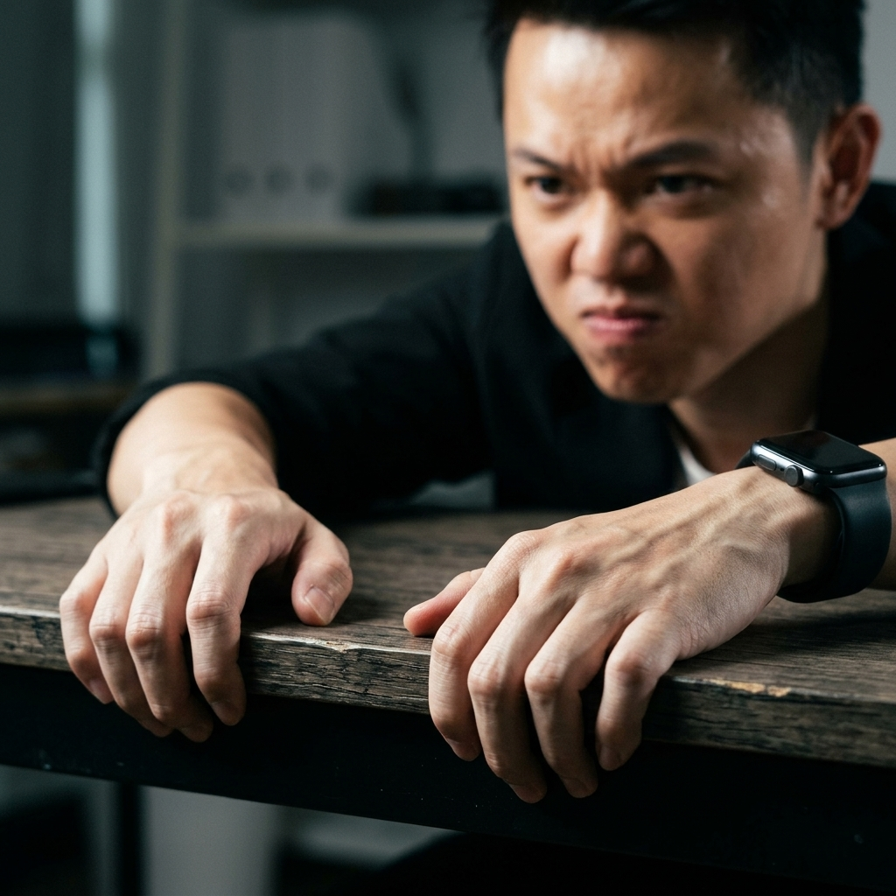

10 FLASHCARDS LUYỆN PHẢN XẠ
Mỗi bức ảnh chân thực ghi lại vi mô chuyển động của chính anh Việt. Chạm hoặc click vào từng thẻ để lật mặt sau xem cơ chế thần kinh và kịch bản phản xạ 3 giây xử lý dứt điểm.
 PHA THẮT
PHA THẮT
NHỊP THỞ KHỰNG LẠI
Đang nói chuyện, đột nhiên nín thở 1-2 giây, lồng ngực treo lơ lửng, mắt mở to sững sờ.
Bản chất ngầm: Bản năng đóng băng của động vật khi giáp mặt thú dữ. Bạn vừa đâm trúng nỗi sợ rủi ro cốt lõi của họ.
 PHA THẮT
PHA THẮT
CĂNG CƠ HÀM & THÁI DƯƠNG
Răng nghiến chặt vô thức, cơ nhai góc hàm phồng bạnh ra, thái dương giật nhẹ.
Bản chất ngầm: Cơn uất ức hoặc bất công bị kìm nén phải nuốt vào. Họ cảm thấy bị đe dọa vị thế hoặc bị dồn ép.
 PHA THẮT
PHA THẮT
NUỐT KHAN / YẾT HẦU TRƯỢT
Cổ họng khô khốc, yết hầu giật ngược lên nuốt một ngụm khan đắng ngắt, môi mím chặt.
Bản chất ngầm: Đang phải nuốt ngược một sự thật cay đắng vào trong, hoặc đang cắn răng nhịn không thốt ra điều sợ hãi.
DẠ DÀY LỘN NHÀO / LẠNH BỤNG
Tay ôm vùng bụng trên/chấn thủy, cảm giác hẫng và lạnh toát đáy dạ dày. (Tự soi mình).
Bản chất ngầm: Cảm biến rủi ro nhạy nhất của hệ thần kinh ruột (Enteric). Sự hoảng loạn sinh tồn, sợ mất kiểm soát, sợ sụp đổ danh tính.

PHA THẮTTRẮNG ĐỐT NGÓN TAY
Bấu chặt mép bàn, thành ghế, siết hai bàn tay vào nhau đến mức các khớp ngón trắng bệch.
Bản chất ngầm: Nỗ lực bám víu tuyệt vọng vào vật chất cụ thể để tìm lại cảm giác kiểm soát khi nội tâm đang chao đảo sụp đổ.
 PHA CHÙNG
PHA CHÙNG
THỞ HẮT RA THƯỜN THƯỢT
Miệng hé mở thổi ra một luồng khí nén dài, ngực xẹp xuống, mắt nhắm lại buông xuôi.
Bản chất ngầm: Lớp vỏ bọc gồng gánh (Ego Defense) vừa vỡ vụn. Sự buông xuôi. Lời thú tội và sự thật chuẩn bị bắt đầu.
 PHA CHÙNG
PHA CHÙNG
BỜ VAI CHÙNG THÕNG
Toàn bộ trương lực cơ vai sụp xuống, đầu hơi chúi về phía trước, lưng gập nhẹ.
Bản chất ngầm: Trút bỏ gánh nặng. Họ đã kiệt sức vì ngụy biện. Đây chính là giây phút họ chính thức trao quyền kiểm soát cho bạn.
 PHA CHÙNG
PHA CHÙNG
ÁNH MẮT CỤP XUỐNG ĐẤT
Nhìn thẳng xuống mũi chân hoặc đùi, phá vỡ liên lạc mắt, mi mắt trĩu nặng tổn thương.
Bản chất ngầm: Nếu nhìn ngang là suy nghĩ logic, nhưng cụp mắt thẳng xuống là dấu hiệu của Sự Xấu Hổ (Shame), cảm giác tội lỗi và bản ngã bị tổn thương.
 PHA CHÙNG
PHA CHÙNG
HÀNH VI TỰ XOA DỊU
Vô thức đưa tay xoa gáy, vuốt cổ, xoa nhẹ cánh tay hoặc bóp nhẹ dái tai.
Bản chất ngầm: Cortisol tăng vọt, cơ thể tự động thực hiện hành vi mơn trớn, ôm ấp để kích thích dây thần kinh phế vị, tự trấn an và hạ nhịp tim.
 PHA CHÙNG
PHA CHÙNG
GIỌNG VỠ / TỤT ÂM VỰC
Đang nói dõng dạc đột nhiên giọng tẽn lại, mỏng đứt quãng, tụt âm lượng về tiếng thì thầm.
Bản chất ngầm: Năng lượng sinh tồn cạn kiệt, họ đã hoàn toàn mất niềm tin vào chính lời bao biện của mình. Rào chắn cuối cùng đã gãy.